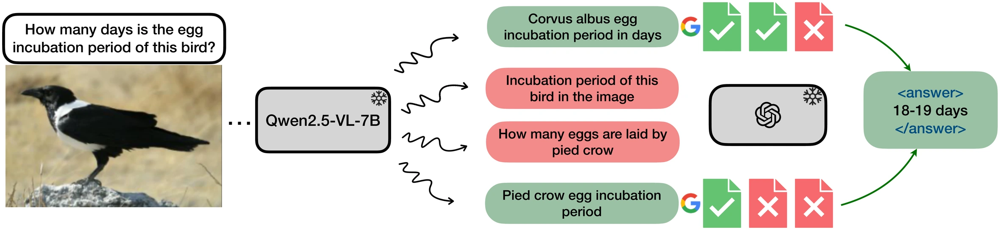
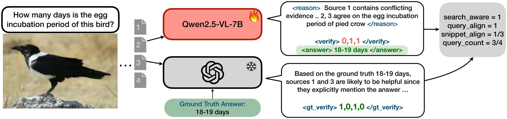
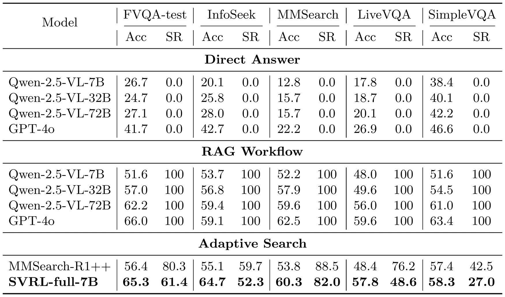
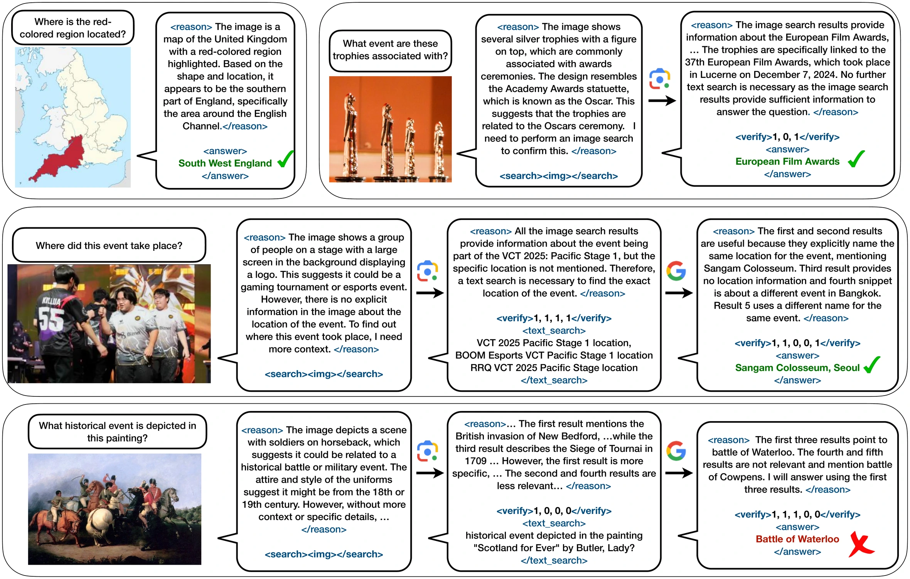

ECCV 2026 · Malmö, Sweden
Eliciting Self-Verification in Multimodal Reasoning Agents with Reinforcement Learning
Vishwas Sathish and Viresh Ranjan contributed equally. Work done during an internship at Amazon.

Fine-grained search control
Reward terms that discourage unnecessary tool calls and reward informative, diverse query proposals — feedback on both when to search and what to search for.
Self-verification for evidence filtering
The agent emits structured verification scores over retrieved items inside its own reasoning trace. Evidence selection becomes learnable, and applies at inference with no external verifier.
Stable optimization & test-time scaling
Dr. GRPO stabilizes training under trajectory-dependent rewards, and sampling more candidate search queries at inference keeps improving accuracy.
Abstract
Reasoning agents increasingly rely on external tools such as web search to answer complex queries. Reinforcement learning (RL) finetuning algorithms such as GRPO have improved long-form reasoning in text-only language models, particularly for coding and mathematics. Reliable tool use in multimodal agents, however, remains challenging because models must interpret text and images while integrating noisy retrieved evidence, often under sparse outcome-level supervision without explicit verification signals. We present Self-Verification via Reinforcement Learning (SVRL), an RL-only finetuning framework that trains multimodal agents to verify and filter retrieved evidence within their own reasoning traces, reducing reliance on external verifiers at inference time. SVRL also introduces a search-aware penalty that discourages unnecessary tool calls and a query-diversity reward that encourages diverse, well-formed search queries, providing fine-grained feedback on when and what to search. Finetuning Qwen-2.5-VL-7B with SVRL on only 5,000 visual question answering examples yields consistent gains in multi-hop VQA generalization and tool efficiency across benchmarks. Overall, SVRL narrows the gap between compact agents and much larger proprietary models while requiring substantially lower training and inference cost.
Why tool-augmented multimodal agents fail
Analyzing a GRPO-finetuned search agent on FVQA surfaces three recurring failure modes. First, agents are poorly calibrated about when to search: search was required but not invoked in over 10% of cases, while over 30% triggered unnecessary search. Second, tool outputs are noisy and go unfiltered — nearly 45% of retrieved results were irrelevant, and the agent still answered incorrectly in over 28% of cases even when it issued an appropriate query and relevant evidence was present. Third, outcome-only supervision leaves every intermediate decision unlabeled, so distinct failure causes collapse into the same terminal penalty.


Method
SVRL treats the multimodal agent as a stochastic policy over multi-turn trajectories and finetunes it with a GRPO-style objective, replacing the sparse trajectory reward with a product of fine-grained factors:
-
Search-aware calibration (
raware) — a single tool-free forward pass labels each training instance assearch_freeor not, and rollouts that call a tool on asearch_freeinstance are downweighted. This targets avoidable searches without suppressing necessary ones. -
Query diversity (
rcount) — the agent proposes k candidate queries and executes one; the fraction of unique, well-formed proposals scales the task reward. -
Verification alignment (
rqalign,rsalign) — the agent emits a binary usefulness vector over retrieved items (e.g.<verify> 0,1,0,1 </verify>) plus a short justification. A train-time oracle verifier with access to the ground-truth answer scores the same queries and snippets, and the agent is rewarded for agreeing with it.
The verification factors are gated on final-answer correctness to avoid reward hacking, and the oracle verifier is discarded at inference — the deployed agent verifies on its own.


Results
We train Qwen-2.5-VL-7B-Instruct on 5,000 FVQA examples and evaluate in-distribution (FVQA-test, InfoSeek) and out-of-distribution (MMSearch, LiveVQA, SimpleVQA). Acc is answer accuracy; SR is search ratio — the fraction of questions on which the agent chose to search.

over the best adaptive-search baseline
at a lower search ratio
7B parameters, no external verifier
Qualitative examples
The finetuned agent produces reasoning traces that compare and reconcile evidence across retrieved results — behavior we never supervise with critique text directly. It also stops searching when the image alone is sufficient. The last row shows a failure that survives verification.

BibTeX
@inproceedings{sathish2026svrl,
title = {Eliciting Self-Verification in Multimodal Reasoning Agents
with Reinforcement Learning},
author = {Sathish, Vishwas and Ranjan, Viresh and Zhu, Xinliang
and Dhua, Arnab and Gray, Douglas},
booktitle = {European Conference on Computer Vision (ECCV)},
year = {2026}
}Page numbers and the proceedings entry will be updated once the camera-ready version is published.